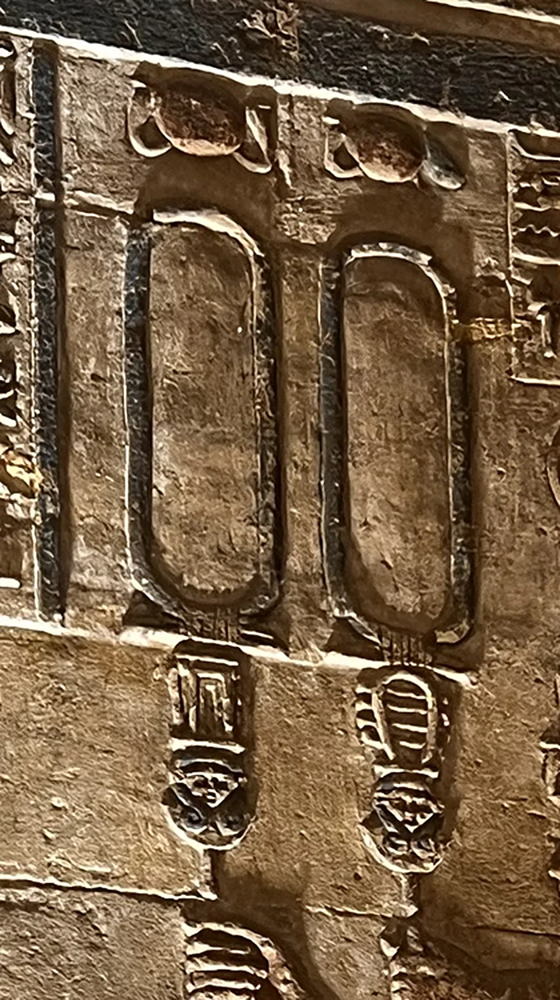

Oficina do escriba
Seu nome em hieróglifos
Os faraós escreviam o nome dentro de um cartucho, um laço de corda sem fim que protegia o nome para sempre. Escreva o seu e veja o escriba gravar sinal por sinal na pedra.

Templo de Dendera: estes dois cartuchos foram esculpidos e nunca receberam um nome. Esperam o seu.
O que cada sinal é
Escrever sinal por sinal, como um escriba ▾
Toque nos sinais para montar o cartucho você mesma. Os egípcios escreviam os sons, não as letras.
Para saber
Este é o alfabeto dos sinais de um som só. Os escribas tinham mais de 700 sinais, mas usavam estes para escrever nomes estrangeiros, como os de Alexandre e Cleópatra. Foi lendo os cartuchos desses dois nomes na Pedra de Roseta que Champollion decifrou os hieróglifos, em 1822. O L não existia no egípcio antigo: no tempo dos Ptolomeus, os escribas usaram o leão para escrever o L de Ptolomeu e de Cleópatra.